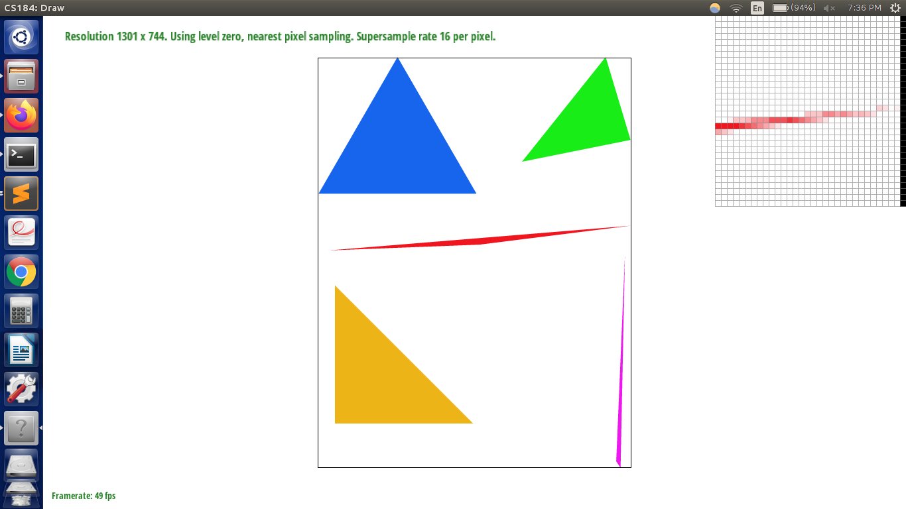
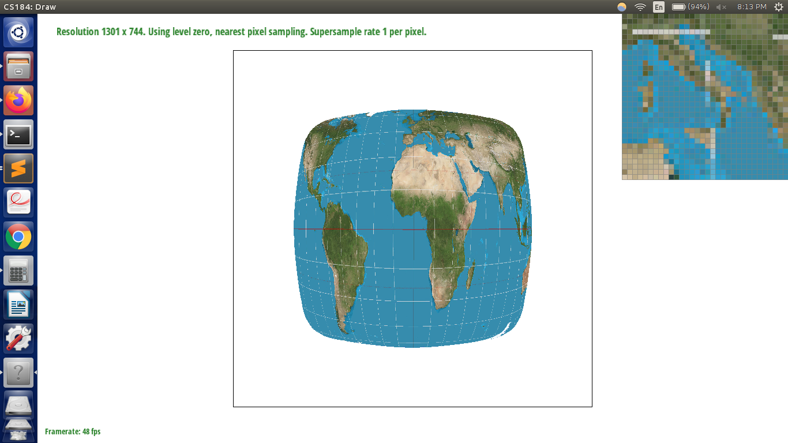
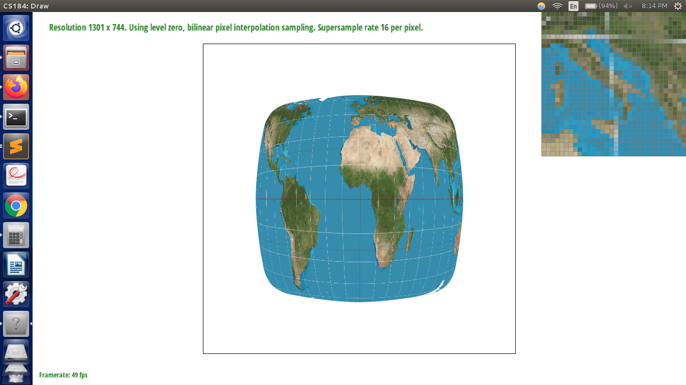
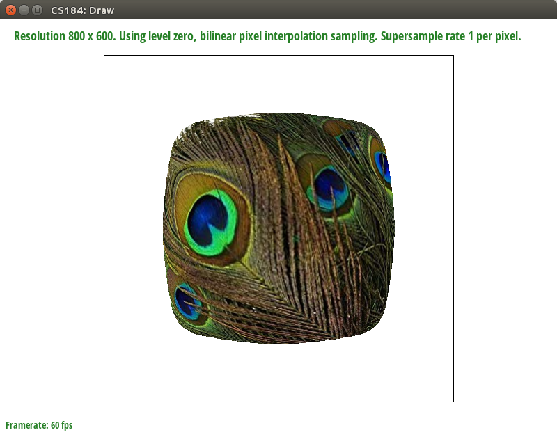
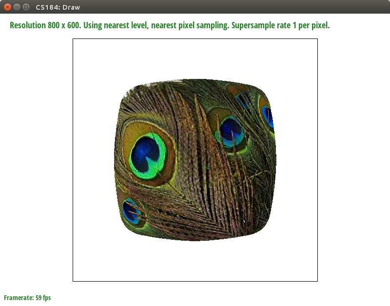
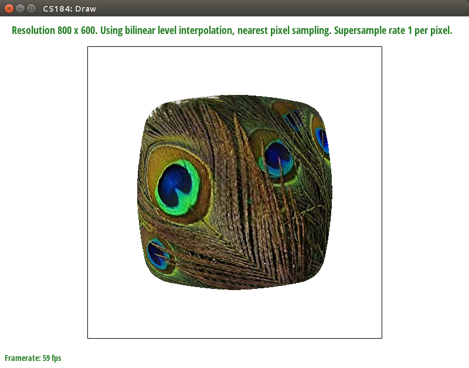

Overview
In this project, I learned how to draw and color triangles.
Section I: Rasterization
Part 1: Rasterizing single-color triangles
Rasterizing a triangle involves converting its coordinates (and its color/texture) into RGB values in a framebuffer array, which corresponds to pixel colors on a display device. For a triangle of a single color, the simplest approach is to first test if the center of each pixel is located within the triangle. Pixels with their center within the triangle will then be given an RGB value equal to that triangles' color. However, testing if each pixel within the framebuffer is within the triangle is computationally prohibitively expensive. Instead, we can bound the triangle by a tightly fitted rectangle containing the triangle. Checking all of the pixels within a rectangle will take approximately 2 times the amount of time as checking all of the pixels within the original triangle, which has the same runtime (O(n)) from a theoretical computational perspective. The other technical detail involves checking whether or not a pixel is within a triangle. This is achieved by checking, for each edge of the triangle, that the target pixel and the opposing vertex are on the same side of the edge. Mathematically, we check if the dot product of a vector perpendicular to the edge (V_perp) and a vector from the target pixel to the edge (delta_P_0) has the same sign as the dot product of the same vector perpendicular to the edge (V_perp) and a vector from the opposing vertex to the edge (delta_P_1).
Part 2: Antialiasing triangles
Note in the above image that some pixels which belong to the red triangle do not actually appear to be connected to the triangle. This is caused by aliasing, which occurs when the base signal/true image (which has a really high frequency in the y-direction in the inset area) is sampled at too low a frequency. Supersampling approximates putting the true image through a low-pass filter before sampling, which ameliorates the aliasing problem. To implement supersampling, I utilized a supersample buffer, which had s entries for each pixel in the original framebuffer, where s is the super-sampling rate. For each triangle, as in part 1, I then tested whether each sample in the supersample buffer was was located within the triangle and assigned it the triangle color if so. To resolve the supersample buffer to the original framebuffer resolution, I simply took the average color of the samples corresponding to each pixel in the original framebuffer resolution.
|  |
Part 3: Transforms
Section II: Sampling
Part 4: Barycentric coordinates
So far, we've been working with triangles of a single color. However, a triangle may have a gradient of color across it. If each vertex of the triangle is associated with a certain color, barycentric coordinates give a way to smoothly interpolate color values across the triangle. In the barycentric coordinate system, a point is expressed in terms of a linear combination of the triangle vertices' coordinates (p = av_1 + bv_2 + cv_3), such that the coordinates of a point sum to 1 (a + b + c = 1). In geometric terms, a point is described as the weighted sum of the triangles' vertices, with the weighting of a vertex being proportional to the area of the triangle formed by the point and the vertex's opposing edge (see below).
Part 5: "Pixel sampling" for texture mapping
In the case that a triangle's color is specified by mapping its vertices onto a 2D texture map, we need a method for mapping pixels in a triangle to color values using the texture map. The first step is to map a point's coordinates in pixel space to coordinates in texel space. This can be done by getting first converting the point (in pixel coordinates) to triangle (barycentric) coordinates, using the triangle vertices in pixel coordinates. We can then use the point's triangle (barycentric) coordinates to get its location in texel space, using the texel coordinates of the triangle vertices. However, we are then faced with the same dilemma as in Parts 1 and 2: the point may not fall on an exact integer texel. We can either round it to the nearest texel ("nearest sampling"), or interpolate a color by computing a weighted average of the nearest texel values ("bilinear sampling"). As in barycentric coordinates, a texel will have more weight if it is closer to the point, and its weight is proportional to the opposing rectangle area. We can see the effects of using nearest or bilinear sampling on texmap/test1.svg in the figure below.
|

|

|

|

|
Part 6: "Level sampling" with mipmaps for texture mapping
As mentioned in the last section, bilinear sampling by itself is insufficient to achieve antialiasing, since the highest frequencies it can successfully attenuate are those at the texel resolution, whereas the texture map, once warped to pixel coordinates, may contain much higher frequencies. To address this problem, we need to be able to determine the degree of low-pass filtering that is needed for a given pixel, and we need to be able to achieve this level of frequency attenuation. The first problem is to determine the degree of low-pass filtering that is needed for a given pixel. To do this, we need to first estimate the frequency of the texture map once warped to pixel space, at a target pixel location. To do this, we take steps in the x- and y-directions in pixel space at the target pixel location, and see how far those steps take us in texel space. We then estimate the frequency of the texture map at the target pixel to be the maximum of the step distances in texel space. Although this is a very rough heuristic, it is computationally efficient and works well in practice. The second problem, of being able to efficiently achieve a certain degree of low-pass filtering, is resolved by storing "mipmaps", or texture maps downsampled to various degrees. Given that the texture map has a frequency f at a certain location, the mipmap at level L = log_2(f) should be used to achieve the correct amount of low-pass filtering. As before, for fractional L, we can either round to the nearest integer L ("nearest" interpolation), or perform a weighted interpolation between the two nearest integer Ls ("linear" interpolation). Overall, we have introduced a number of techniques for antialiasing, from supersampling in the pixel domain to bilinear or even trilinear interpolation for texture mapping. Supersampling is by far the most expensive of these techniques computationally, while also having a large memory overhead. Storing mipmaps is relatively cheap in memory (requiring 33% more memory than the base texture map), and has the most antialiasing power (for frequencies up to 2^L_max), but performing interpolation between levels doubles the number of computations required. Bilinear interpolation quadruples computation while only doubling the maximum frequency that can be attenuated; however, it is only only technique which can antialias sub-pixel frequencies in the texture map itself. It should also be noted that none of these techniques would be necessary if the texture map is very low resolution or the image is very zoomed in.
|
|

|
|

|
|
|

|
|
Section III: Art Competition
If you are not participating in the optional art competition, don't worry about this section!